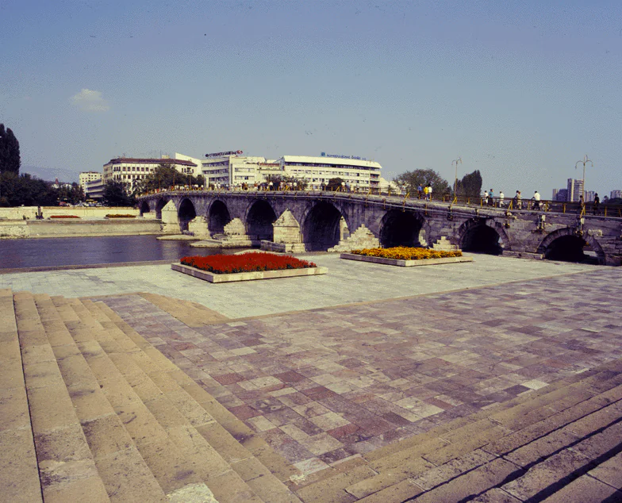
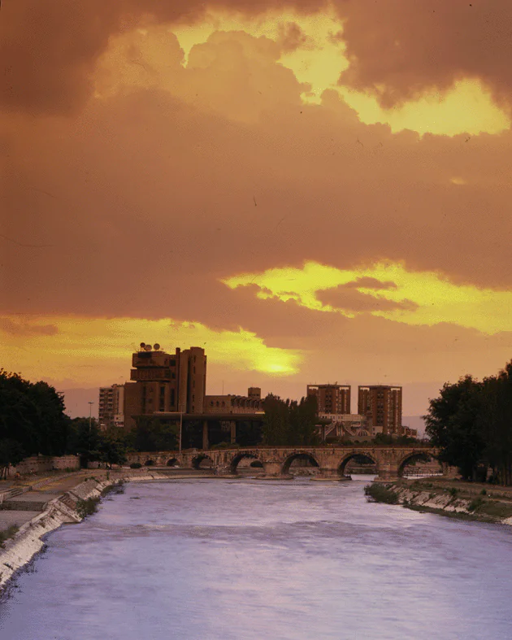
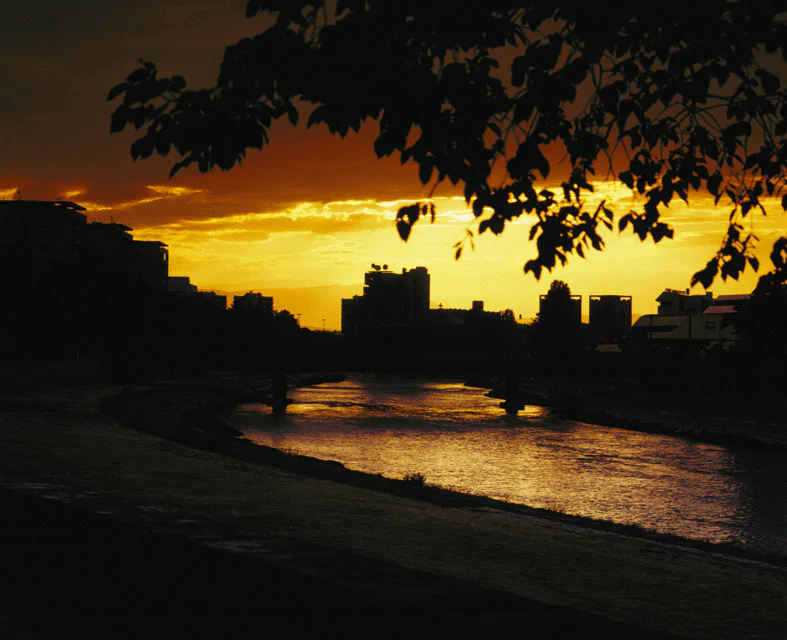
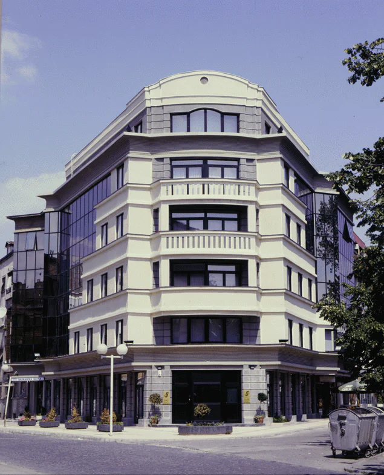
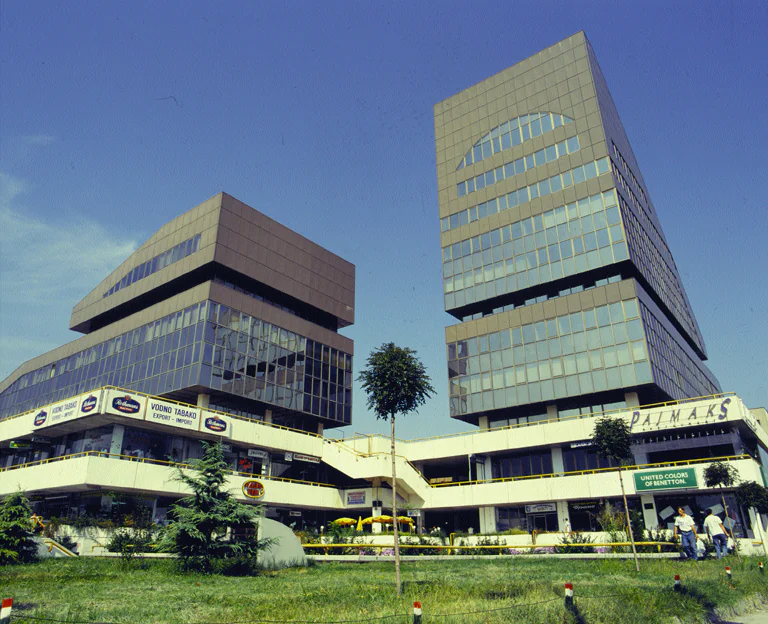
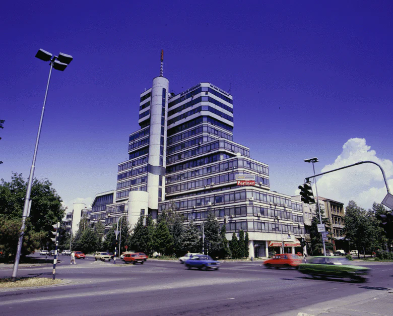
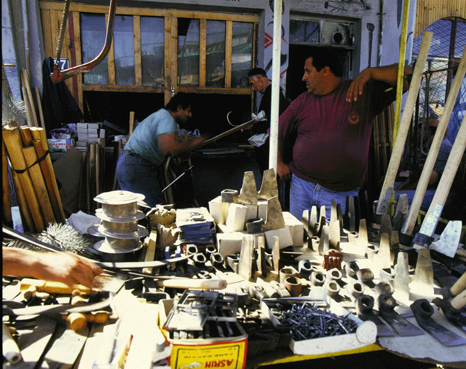
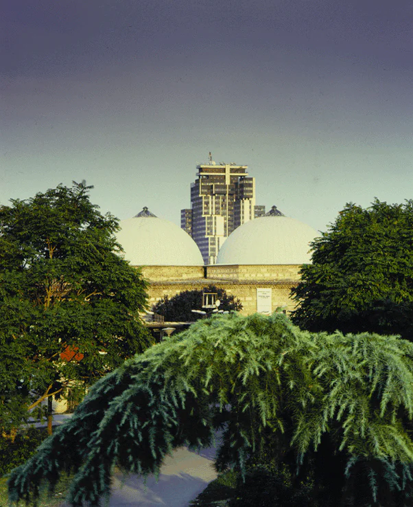
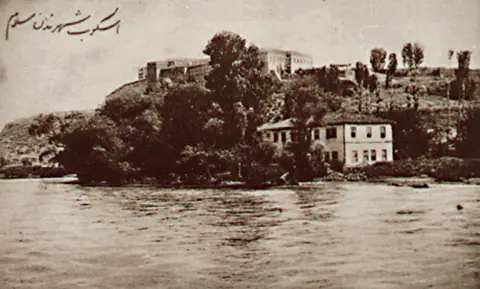

Davut Paşa Hamamı
- Yapım
- UFUŽ ve Prag Belgesel Filmi
- Senaryo ve yönetmen
- Slavko Janevski ve EMAN CANERA
- Yıl
- 1959
- Süre
- 00:08

"Ohrili Aziz Kliment" Katedral Kilisesi. 12 Ağustos 1990'da Başpiskopos Gavril başkanlığında çok sayıda üst düzey din adamının katılımıyla "Ohrili Aziz Kliment" Katedral Kilisesi törenle kutsandı. Yaklaşık 80.000 kişi katıldı: Üsküplüler, diğer Makedon şehirlerinden gelenler ve diasporadaki Makedonlar (Avustralya, Kanada, ABD ve birkaç Avrupa ülkesi).



Taş Köprü'den şehrin eski kısmına bakış.

Vardar nehrinin sağ kıyısındaki gezinti yolu.

Üsküp Kalesi ve Vardar nehri.

Eski Taş Köprü üzerinde gün batımı.


Üsküp Kalesi'nden Üsküp'ün merkez bölgesinin panoramik görünümü.

Üsküp'ün panoramik görünümü. Ortada Üsküp tiyatrosu var.

Ristić Sarayı ve meydan.

"Makedonija" Caddesi'nin meydana doğru bir bölümü.


"Mavrovka" alışveriş merkezi

Üsküp merkezinin bir bölümü - "Arap Evi".

"Nova Makedonija" gazetesinin binası.

"Bunjakovec" alışveriş merkezi.

Eski zanaatlar Üsküp'te hâlâ yaşıyor. Fotoğrafta, ev aletlerinin yüzlerce yıl önceki gibi neredeyse aynı yöntemle yapıldığı bir dükkân görülüyor.

Davut Paşa Hamamı'nın bir bölümü, arka planda Makedon Radyo Televizyonu binası.

Eski Üsküp çarşısının bir bölümü.

Üsküp'ün kuzeybatıya doğru panoraması.

Üsküp'ün kuzeybatıya doğru gece panoraması.

Vodno dağından Üsküp'ün görünümü.

Üsküp Kalesi'nden şehrin merkez bölgesinin panoraması.


5 Eylül 1998'de dikilen Rahibe Teresa anıtı.

 Su kemeri4 kartpostal
Su kemeri4 kartpostal Kale30 kartpostal
Kale30 kartpostal Köprüler60 kartpostal
Köprüler60 kartpostal Rıhtım58 kartpostal
Rıhtım58 kartpostal Meydan46 kartpostal
Meydan46 kartpostal Binalar66 kartpostal
Binalar66 kartpostal Hristiyan kiliseleri19 kartpostal
Hristiyan kiliseleri19 kartpostal İslami yapılar33 kartpostal
İslami yapılar33 kartpostal Subaylar Evi29 kartpostal
Subaylar Evi29 kartpostal
Tiyatro28 kartpostal Tren garı13 kartpostal
Tren garı13 kartpostal Okullar36 kartpostal
Okullar36 kartpostal Parklar12 kartpostal
Parklar12 kartpostal Pazarlar18 kartpostal
Pazarlar18 kartpostal Sokaklar38 kartpostal
Sokaklar38 kartpostal Panorama I60 kartpostal
Panorama I60 kartpostal Panorama II30 kartpostal
Panorama II30 kartpostal Kolajlar55 kartpostal
Kolajlar55 kartpostal Seller9 kartpostal
Seller9 kartpostal Deprem27 kartpostal
Deprem27 kartpostal Üsküp 200026 kartpostal
Üsküp 200026 kartpostal